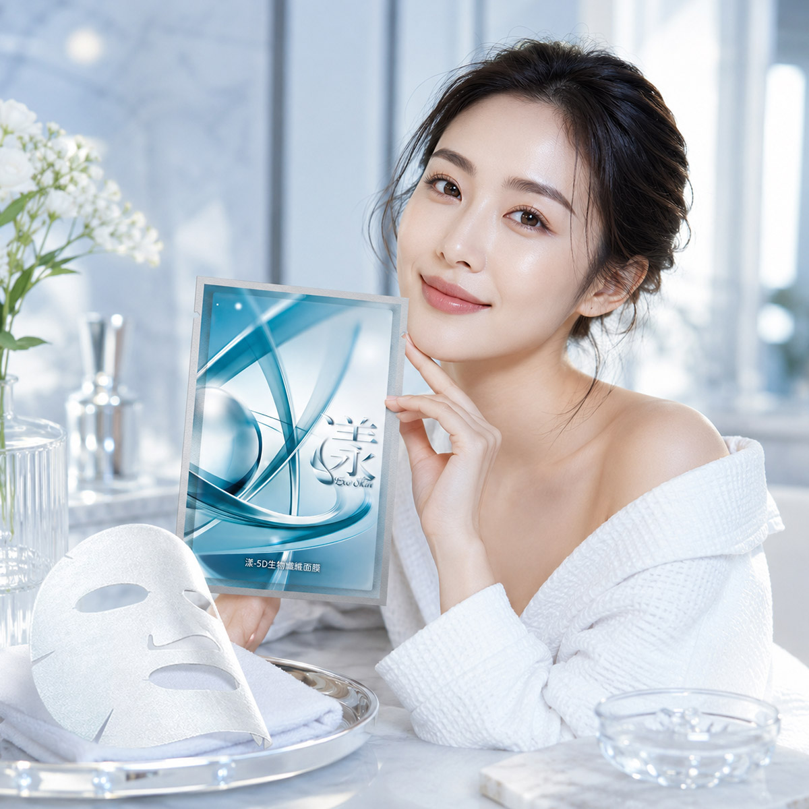
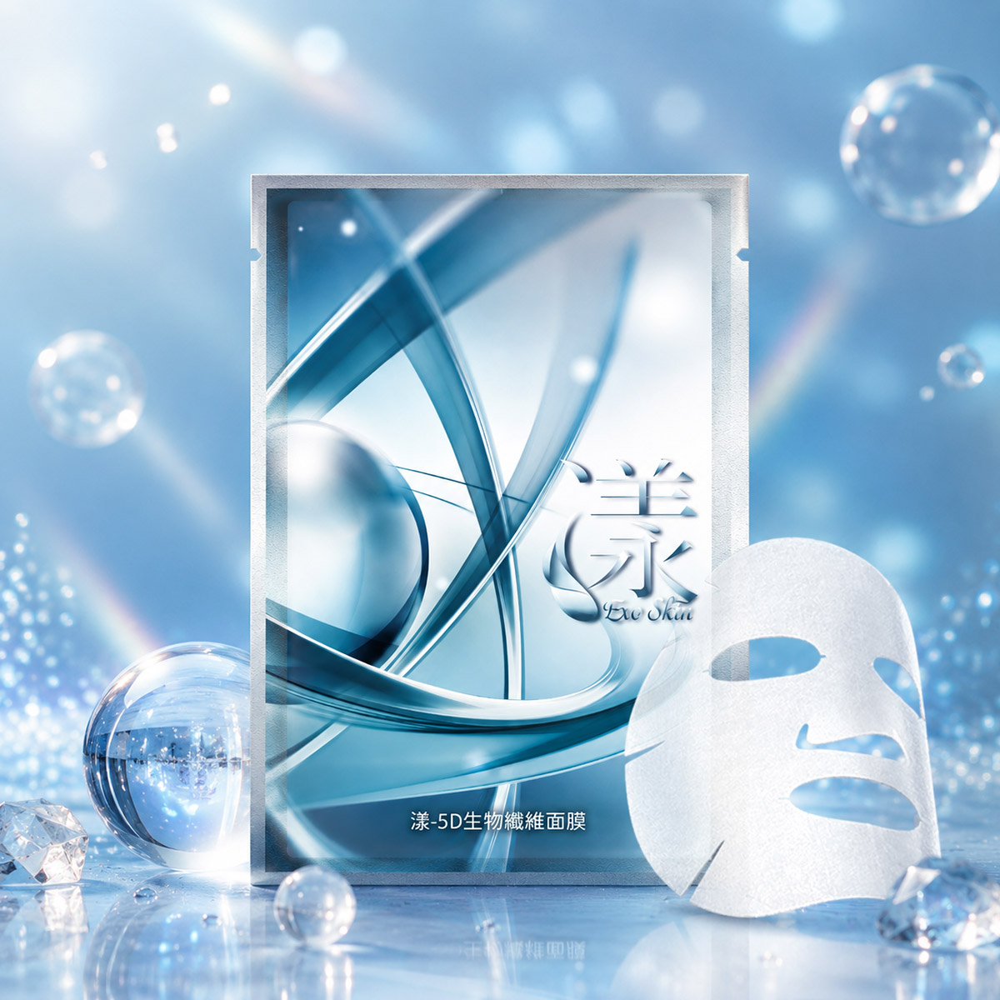
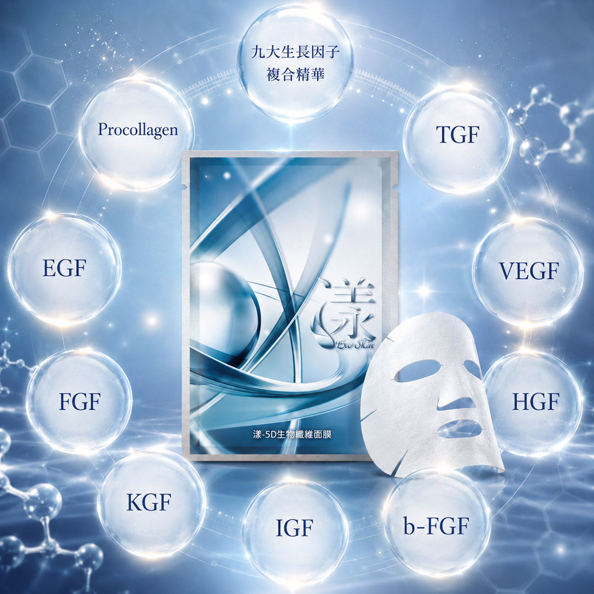
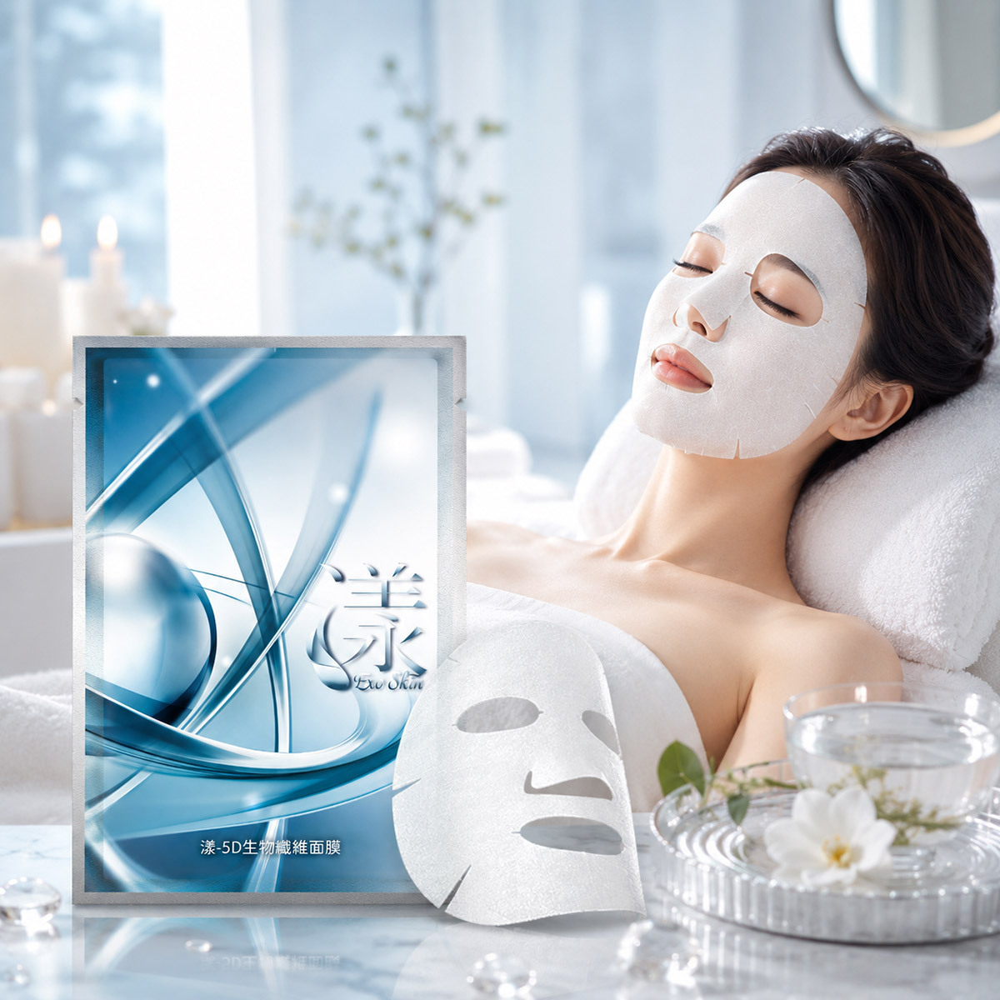
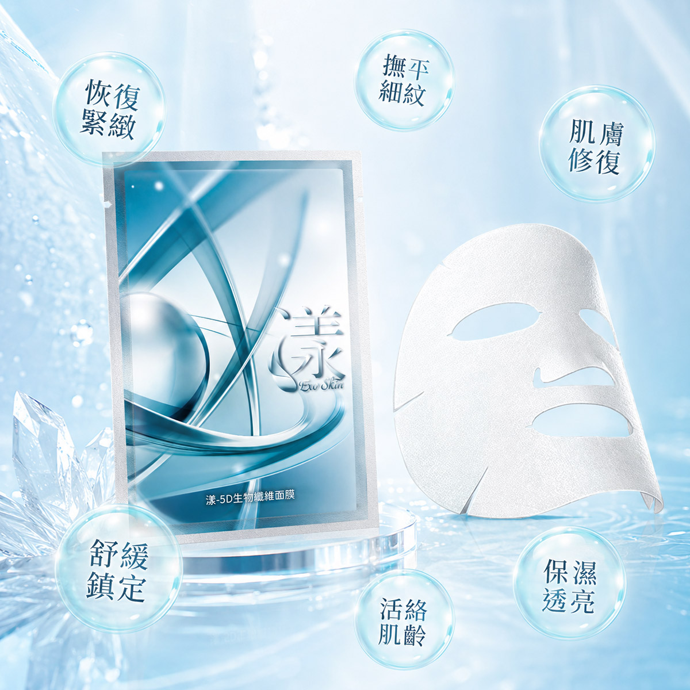
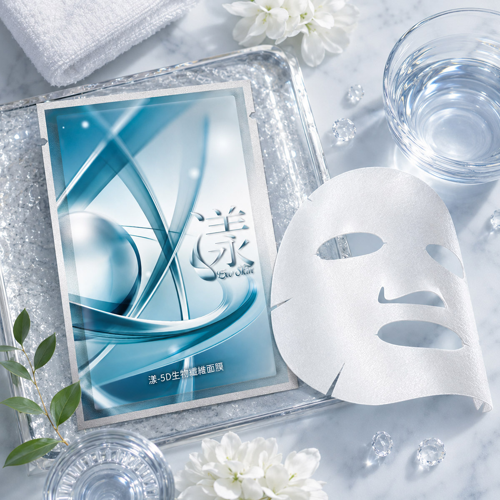
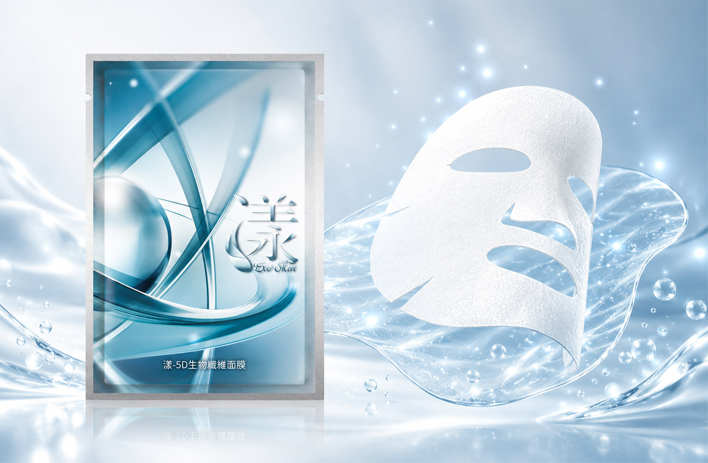
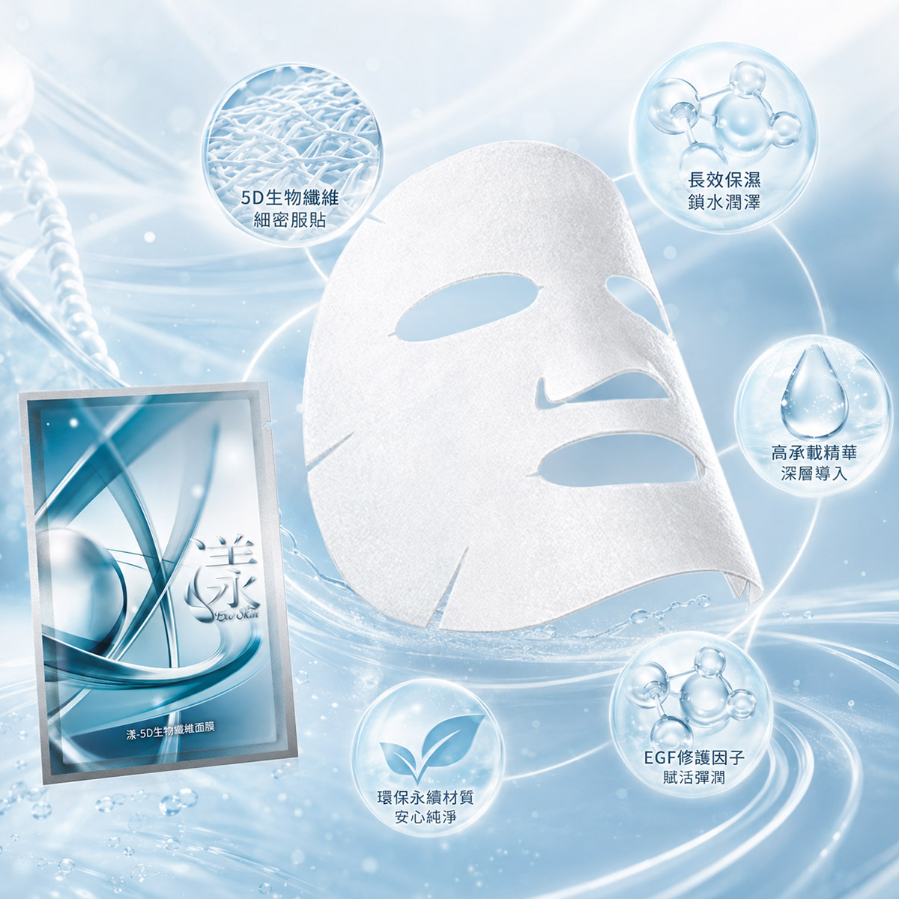
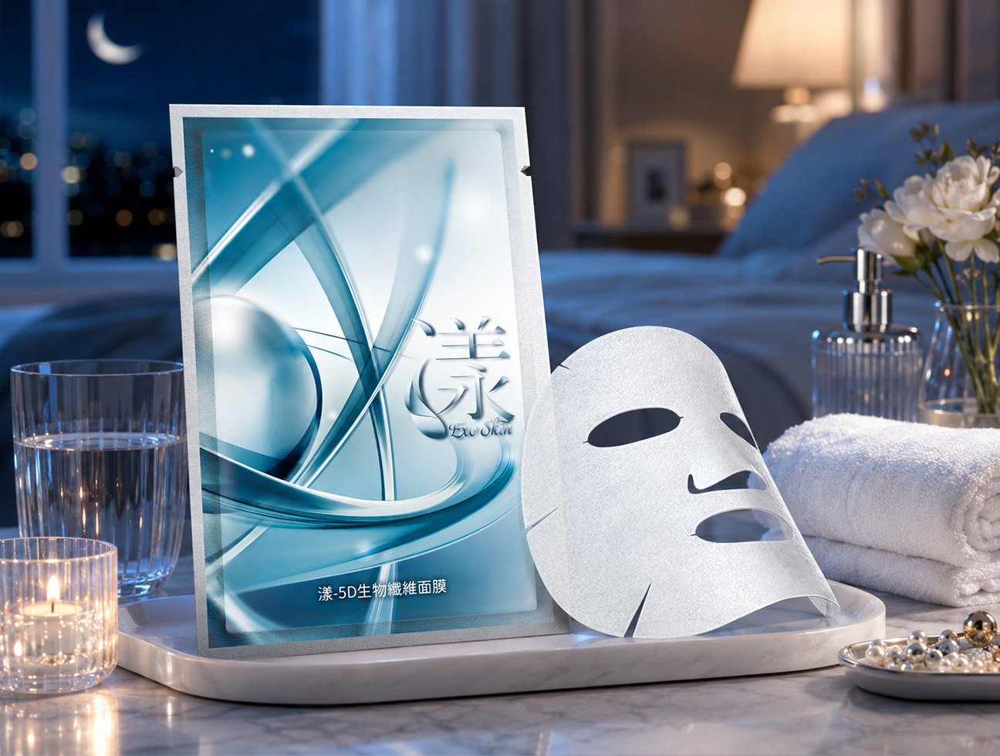

醫研面膜 × 生物纖維 × 深層保養
漾 5D 生物纖維面膜，以細緻生物纖維材質打造出高密貼的敷臉體驗。纖維直徑僅約頭髮的千分之一，能順著臉部輪廓與細緻紋理服貼延展，讓精華更完整覆蓋肌膚表面。
搭配 9 大生長因子複合精華，為肌膚補充日常保養所需的滋潤、彈潤與飽水感。不只是敷一片面膜，而是為肌膚安排一段更細緻、更沉浸的修護保養時間。






搭配高階保養精華配方，從保濕、彈潤、緊緻感到肌膚光澤度，提供熟齡肌與乾燥肌日常保養所需的細緻呵護。
貼得越細，保養越到位
一般面膜最容易忽略的地方，往往就是臉部線條轉折處。像是鼻翼、眼周、法令紋、下巴輪廓，若面膜不夠服貼，精華就容易停留在表層，甚至還沒吸收就開始滑落。
漾 5D 生物纖維面膜採用細緻生物纖維結構，能像第二層肌膚般貼合臉部曲線，讓精華與肌膚維持更穩定的接觸時間。
5D 生物纖維面膜的核心，不只是「有精華液的面膜」，而是把面膜本體當成精華的承載平台。
它的纖維結構比一般不織布面膜更加細密，能更貼近肌膚紋理，在臉上形成穩定的濕潤保養環境。當面膜與肌膚貼合度提高，精華就不容易因空氣接觸或面膜滑動而浪費，敷臉時也更有包覆感。
適合想要提升敷臉儀式感、在重要場合前加強保養，或平常覺得一般面膜不夠服貼的人使用。


面膜本體由微生物培養的天然纖維製成，透氣不透水，敷著不悶熱，生物相容性極高，對各種膚質都相當友善。
纖維直徑僅為頭髮的 1/1000，能深入肌膚紋路，讓精華成分觸及平日保養到不了的地方，吸收更全面。
可吸附比一般面膜多 3 倍的精華液量，在肌膚上形成密封保濕層，大幅延長精華的吸收時間，效率更高。
主成分具生物分解性，使用後不造成環境負擔，是對自己好、對地球也好的永續保養選擇。
蘊含 9 大生長因子保養精華，協助肌膚補水、彈潤與細緻調理，讓敷臉後膚觸更柔嫩透亮。
不容易只停留在平面區域，連鼻翼、眼周、法令紋周圍等細節部位，也能更穩定接觸。
面膜能吸附更多精華液，延長濕潤保養時間，適合乾燥、缺水或需要加強保養的肌膚狀態。
搭配高階保養精華，幫助肌膚維持柔嫩、彈潤與飽水感，讓敷後膚觸更細緻。
生物纖維材質具備透氣特性，敷臉時不容易有悶住的厚重感，適合想要舒適保養的人。
約會、拍照、聚會、商務活動前使用，能讓肌膚看起來更水潤服貼，上妝也更有細緻感。
主成分具生物分解性，減少使用後的環境負擔，讓日常保養多一點安心感。
想讓妝感更貼、膚況看起來更穩定，可以在活動前安排一次加強保養。
當肌膚看起來暗沉、乾燥、疲憊時，用一片面膜讓保養節奏重新拉回來。
天氣變化、冷氣房、長時間待在室內，都容易讓肌膚感覺緊繃，適合加強補水與滋潤。
不一定要等到膚況不好才使用，也可以固定安排成每週的肌膚保養儀式。
